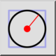
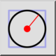
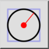
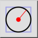

Centro, raggio
Barra degli strumenti / Icona:
 

Menù: Disegna > Cerchio > Centro, raggio
Scorciatoia: C, R
Comandi: circlecr | cr
Questa è una traduzione automatica.
Barra degli strumenti / Icona:
 

Menù: Disegna > Cerchio > Centro, raggio
Scorciatoia: C, R
Comandi: circlecr | cr
Questo strumento vi permette di creare cerchi conoscendo la posizione del centro e la misura del raggio.